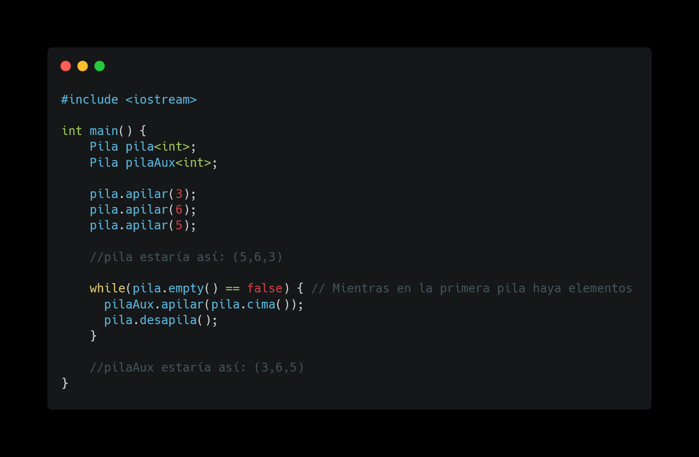

Índice
Estructura de Datos I
¿Qué es una estructura de datos?
Una estructura de datos es simplemente un tipo de datos como podrían serlo un int, un float o un boolean, pero que en lugar de almacenar un solo dato, permite almacenar varios de ellos y además de forma ordenada y proporcionando mecanismos para un manejo sencillo de estos datos.
¿Qué beneficios aporta una estructura de datos frente a un array?
La principal ventaja es que los arrays por lo general son de tamaño estático, es decir, cuando creas un array, debes indicar cual es su tamaño, por ejemplo 10, y con eso el array solo podrá guardar 10 elementos. Esto no ocurre con las estructuras de datos, las cuales pueden ir creciendo y decreciendo dinámicamente en tiempo real.
¿Qué tipos de estructuras de datos existen?
Existen muchos tipos de datos, algunos los veremos en proximas asignaturas como los arboles o los grafos, pero de momento para esta asignatura nos bastará con manejar pilas, colas y listas.
Pilas o stacks
Las pilas son estructuras de datos que almacenan y sacan la información por el mismo elemento. ¿Como podemos visualizar esto? Imaginemos un paquete de galletas.
Como vemos, si queremos sacar una galleta, siempre vamos a coger la que está arriba del todo, y si queremos guardar una galleta, la vamos a poner arriba del todo también, a eso nos referimos cuando decimos que almacenamos y sacamos la información por el mismo elemento, siempre operamos sobre el elemento más alto, también llamado cima o top. Veamos un ejemplo de como funciona una pila.
Lo que ocurre en el código anterior es lo siguiente:
- Creamos la pila que contendrá solo elementos int.
- Apilamos los valores 3, 6 y 5, en ese orden.
- Miramos el tamaño de la pila, en este caso será 3, ya que hemos añadido 3 elementos
- Desapilamos 2 elementos, como se desapilan los que están mas arriba, es decir, los últimos que se han apilado, se eliminan el 5 y el 6
- Miramos el tamaño, que ahora será 1, y la cima, es decir, el elemento que está en la primera posición de la pila, en este caso es el 3
- Desapilamos el siguiente caso, en este caso el 3
- Miramos el tamaño de la pila, veremos que ahora es 0, ya que no quedan elementos
Ilustremos con una imagen para que quede más claro.
Operaciones comunes con pilas
Invertir pila
Copiar pila
Eliminar elemento x de una pila

Usos de una pila
Las pilas son usadas en validación paréntesis, por ejemplo si tienes un texto y quieres comprobar si todos los paréntesis y llaves están cerrados los metes en una pila y cuentas cuantos hay abiertos y cuantos cerrados y así sabes si está todo correcto. También se usan para guardar un historial, ya sea de navegación en un buscador o para guardar acciones recientes, por ejemplo cuando hacemos Ctrl+Z.
Colas o queues
Las colas son estructuras de datos que almacenan datos por el final y sacan los elementos por el principio, tal como funcionaría una cola de supermercado. Vamos a verlo.
El funcionamiento de la cola es sencillo e intuitivo, los elementos van entrando por el final y saliendo por el principio, por lo que vamos a tener los elementos ordenados por orden de llegada, al contrario que en la pila, donde los elementos estaban ordenados al revés de su llegada.
Veamos un ejemplo sencillo de código
Vamos a explicar esto:
- Creamos la cola que almacenará elemetos int.
- Encolamos los elementos 3, 6 y 5, en ese orden, los elementos entrarán por el final de la cola.
- Mostramos el primero, el último y el tamaño, serán 3, 5 y 3 respectivamente.
- Desencolamos 2 elementos, es decir, los sacamos por el principio de la cola.
- Mostramos el primero, el último y el tamaño, serán 3, 3 y 1 respectivamente. Observamos que el primer y último elemento son el mismo.
- Desencolamos el último elemento.
- Mostramos el tamaño, que ahora será 0.